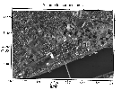

You have collected your data, loaded it into Matlab , analyzed everything to death, and now you want to make a simple map showing how it relates to the world.
But you can't.
Instead you have to figure out how to save all your data, and then read it into another program (like, for example GMT ), and then spend all that extra time figuring out why it doesn't give you what you expected it would...or you can invest in Matlab's own mapping toolbox (with a similarly steep learning curve)... or not!
| |
|
|
|
|
| |
|
|
|
|
| |
|
|
||
| |
 |
A number of examples have been given to highlight the various capabilities of M_Map (thumbnails are shown above).
You can also get m_namebox (a set of utilities for automatically adding names to your map), through its home page at http://www.nersc.no/~even/ .
m_proj('ortho','lat',48','long',-123');
m_coast('patch','r');
m_grid('linest','-','xticklabels',[],'yticklabels',[]);
patch(.55*[-1 1 1 -1],.25*[-1 -1 1 1]-.55,'w');
text(0,-.55,'M\_Map','fontsize',25,'color','b',...
'vertical','middle','horizontal','center');
set(gcf,'units','inches','position',[2 2 3 3]);
set(gcf,'paperposition',[3 3 3 3]);
m_proj('lambert','long',[-160 -40],'lat',[30 80]);
m_coast('patch',[1 .85 .7]);
m_elev('contourf',[500:500:6000]);
m_grid('box','fancy','tickdir','in');
colormap(flipud(copper));
% Note that coastline is drawn OVER the grid because of the order in which
% the two routines are called
m_proj('stereographic','lat',90,'long',30,'radius',25);
m_elev('contour',[-3500:1000:-500],'edgecolor','b');
m_grid('xtick',12,'tickdir','out','ytick',[70 80],'linest','-');
m_coast('patch',[.7 .7 .7],'edgecolor','r');
subplot(211);
Slongs=[-100 0;-75 25;-5 45; 25 145;45 100;145 295;100 290];
Slats= [ 8 80;-80 8; 8 80;-80 8; 8 80;-80 0; 0 80];
for l=1:7,
m_proj('sinusoidal','long',Slongs(l,:),'lat',Slats(l,:));
m_grid('fontsize',6,'xticklabels',[],'xtick',[-180:30:360],...
'ytick',[-80:20:80],'yticklabels',[],'linest','-','color',[.9 .9 .9]);
m_coast('patch','g');
end;
xlabel('Interrupted Sinusoidal Projection of World Oceans');
% In order to see all the maps we must undo the axis limits set by m_grid calls:
set(gca,'xlimmode','auto','ylimmode','auto');
subplot(212);
Slongs=[-100 43;-75 20; 20 145;43 100;145 295;100 295];
Slats= [ 0 90;-90 0;-90 0; 0 90;-90 0; 0 90];
for l=1:6,
m_proj('mollweide','long',Slongs(l,:),'lat',Slats(l,:));
m_grid('fontsize',6,'xticklabels',[],'xtick',[-180:30:360],...
'ytick',[-80:20:80],'yticklabels',[],'linest','-','color','k');
m_coast('patch',[.6 .6 .6]);
end;
xlabel('Interrupted Mollweide Projection of World Oceans');
set(gca,'xlimmode','auto','ylimmode','auto');
%% Nice looking data
[lon,lat]=meshgrid([-136:2:-114],[36:2:54]);
u=sin(lat/6);
v=sin(lon/6);
m_proj('oblique','lat',[56 30],'lon',[-132 -120],'aspect',.8);
subplot(121);
m_coast('patch',[.9 .9 .9],'edgecolor','none');
m_grid('tickdir','out','yaxislocation','right',...
'xaxislocation','top','xlabeldir','end','ticklen',.02);
hold on;
m_quiver(lon,lat,u,v);
xlabel('Simulated surface winds');
subplot(122);
m_coast('patch',[.9 .9 .9],'edgecolor','none');
m_grid('tickdir','out','yticklabels',[],...
'xticklabels',[],'linestyle','none','ticklen',.02);
hold on;
[cs,h]=m_contour(lon,lat,sqrt(u.*u+v.*v));
clabel(cs,h,'fontsize',8);
xlabel('Simulated something else');
% Plot a circular orbit
lon=[-180:180];
lat=atan(tan(60*pi/180)*cos((lon-30)*pi/180))*180/pi;
m_proj('miller','lat',82);
m_coast('color',[0 .6 0]);
m_line(lon,lat,'linewi',3,'color','r');
m_grid('linestyle','none','box','fancy','tickdir','out');
m_proj('lambert','lon',[-10 20],'lat',[33 48]);
m_tbase('contourf');
m_grid('linestyle','none','tickdir','out','linewidth',3);
m_vec % See code in m_vec.m for details
% Example showing the default coastline and all of the different resolutions
% of GSHHS coastlines as we zoom in on a section of Prince Edward Island.
clf
axes('position',[.35 .6 .37 .37]);
m_proj('albers equal-area','lat',[40 60],'long',[-90 -50],'rect','on');
m_coast('patch',[0 1 0]);
m_grid('linest','none','linewidth',2,'tickdir','out','xaxisloc','top','yaxisloc','right');
m_text(-69,41,'Standard coastline','color','r','fontweight','bold');
axes('position',[.09 .5 .37 .37]);
m_proj('albers equal-area','lat',[40 54],'long',[-80 -55],'rect','on');
m_gshhs_c('patch',[.2 .8 .2]);
m_grid('linest','none','linewidth',2,'tickdir','out','xaxisloc','top');
m_text(-80,52.5,'GSHHS\_C (crude)','color','m','fontweight','bold','fontsize',14);
axes('position',[.13 .2 .37 .37]);
m_proj('albers equal-area','lat',[43 48],'long',[-67 -59],'rect','on');
m_gshhs_l('patch',[.4 .6 .4]);
m_grid('linest','none','linewidth',2,'tickdir','out');
m_text(-66.5,43.5,'GSHHS\_L (low)','color','m','fontweight','bold','fontsize',14);
axes('position',[.35 .05 .37 .37]);
m_proj('albers equal-area','lat',[45.8 47.2],'long',[-64.5 -62],'rect','on');
m_gshhs_i('patch',[.5 .6 .5]);
m_grid('linest','none','linewidth',2,'tickdir','out','yaxisloc','right');
m_text(-64.4,45.9,'GSHHS\_I (intermediate)','color','m','fontweight','bold','fontsize',14);
axes('position',[.55 .23 .37 .37]);
m_proj('albers equal-area','lat',[46.375 46.6],'long',[-64.2 -63.7],'rect','on');
m_gshhs_h('patch',[.6 .6 .6]);
m_grid('linest','none','linewidth',2,'tickdir','out','xaxisloc','top','yaxisloc','right');
m_text(-64.18,46.58,'GSHHS\_H (high)','color','m','fontweight','bold','fontsize',14);
m_proj('UTM','long',[-72 -68],'lat',[40 44]);
m_gshhs_i('color','k');
m_grid('box','fancy','tickdir','in');
% fake up a trackline
lons=[-71:.1:-67];
lats=60*cos((lons+115)*pi/180);
dates=datenum(1997,10,23,15,1:41,zeros(1,41));
m_track(lons,lats,dates,'ticks',0,'times',4,'dates',8,...
'clip','off','color','r','orient','upright');

m_proj('hammer','clong',170);
m_grid('xtick',[],'ytick',[],'linestyle','-');
m_coast('patch','g');
m_line(100.5,13.5,'marker','square','color','r');
m_range_ring(100.5,13.5,[1000:1000:15000],'color','b','linewi',2);
xlabel('1000km range rings from Bangkok');
bndry_lon=[-128.8 -128.8 -128.3 -128 -126.8 -126.6 -128.8];
bndry_lat=[49 50.33 50.33 50 49.5 49 49];
clf;
m_proj('lambert','long',[-130 -121.5],'lat',[47 51.5],'rectbox','on');
m_gshhs_i('color','k'); % Coastline...
m_gshhs_i('speckle','color','k'); % with speckle added
m_line(bndry_lon,bndry_lat,'linewi',2,'color','k'); % Area outline ...
m_hatch(bndry_lon,bndry_lat,'single',30,5,'color','k'); % ...with hatching added.
m_grid('linewi',2,'linest','none','tickdir','out','fontsize',12);
title('Speckled Boundaries for nice B&W presentation (best in postscript format)','fontsize',14);
m_text(-128,48,5,{'Pacific','Ocean'},'fontsize',18);
m_proj('miller','lat',[-75 75]);
set(gca,'color',[.9 .99 1]); % Trick is to set this *before* the patch call.
m_coast('patch',[.7 1 .7],'edgecolor','none');
m_grid('box','fancy','linestyle','none');
cities={'Cairo','Washington','Buenos Aires'};
lons=[ 30+2/60 -77-2/60 -58-22/60];
lats=[ 31+21/60 38+53/60 -34-45/60];
for k=1:3,
[range,ln,lt]=m_lldist([-123-6/60 lons(k)],[49+13/60 lats(k)],40);
m_line(ln,lt,'color','r','linewi',2);
m_text(ln(end),lt(end),sprintf('%s - %d km',cities{k},round(range)));
end;
title('Great Circle Routes','fontsize',14,'fontweight','bold');
% NOAA/NASA Pathfinder AVHRR SST product
% http://podaac.jpl.nasa.gov/sst/
[P,map]=imread('../m_mapWK/199911h54ma-gdm.hdf');
% Documentation for the 54km dataset gives
% this formula for temperature
P=0.15*double(P)-3; % deg C
%...and defines this Lat/Long grid for the data
Plat=90-.25-[0:359]*.5;Plon=-180+.25+[0:719]*.5;
% Since the grid is rectangluar in lat/long (i.e. not
% really a projection at all, although it is included in
% m_map under the name 'equidistant cyldindrical'), we
% don't want to use the 'image' technique. Instead...
% Create a grid, offsetting by half a grid point to account
% for the flat pcolor
[Plg,Plt]=meshgrid(Plon-0.25,Plat+0.25);
m_proj('hammer-aitoff','clongitude',-150);
% Rather than rearranging the data so its limits match the
% plot I just draw it twice (you can see the join at 180W
% because of the quirks of flat pcolor) (Note that
% all the global projections have 360 deg ambiguities)
m_pcolor(Plg,Plt,P);shading flat;colormap(map);
hold on;
m_pcolor(Plg-360,Plt,P);shading flat;colormap(map);
m_coast('patch',[.6 1 .6]);
m_grid('xaxis','middle');
% add a standard colorbar.
h=colorbar('h');
set(get(h,'title'),'string','AVHRR SST Nov 1999');
% SSM/I Ice concentration grids
% (National Snow and Ice Data Center)
P=hdfread('/mnt/cdrom/nasateam/northern/1991/feb/910222.tot','8-bit Raster Image #2');
P(P==168)=101; % Land, no coverage.
P(P==157)=102; % Bad data
% SSM/I ice products are in a polar stereographic projection.
% and the corner points of the grid are given. Here we just
% use those given corner points and 'assume' everything will
% work. It's not bad, although their projection actually uses
% an ellipsoidal earth (m_map uses a spherical earth).
m_proj('stereographic','latitude',90,'radius',55,'rotangle',45);
% Convert bottom and left corner points to screen coords. This
% is of course a kludge.
[MAPX,dm]=m_ll2xy([279.26 350.03],[33.92 34.35],'clip','off');
[dm,MAPY]=m_ll2xy([168.35 279.26],[30.98 33.92],'clip','off');
clf
% Plot data as an image
image(MAPX,MAPY,P);set(gca,'ydir','normal');
colormap([jet(100);0 0 0;1 1 1]);
m_coast('patch',[.6 .6 .6]);
m_grid('linewi',2,'tickdir','out');
title('SSM/I Ice cover Feb 22 1991','fontsize',14,'fontweight','bold');
h=colorbar('v');
set(get(h,'ylabel'),'string','Total Ice Concentration (%)');
% This image comes from the TerraServer
% (http://terraserver.microsoft.com/)
% and has been georeferenced to UTM coords. The UTM projection
% uses UTM coordinates on the screen (as long as the ellipse
% parameter is set to something other than the default).
[P,map]=imread('../m_mapWK/oncehome.jpeg');
% Set the projection limits to the lat/long of image
% corners.
m_proj('UTM','long',[-71-6/60-30/3600 -71-4/60-43/3600],...
'lat',[42+21/60+13/3600 42+22/60+7/3600],'ellipse','wgs84');
clf;
image([326400 328800],[4692800 4691200],P);set(gca,'ydir','normal');
m_grid('tickdir','out','linewi',2,'fontsize',14);
title('A home for certain nerds','fontsize',16);
% Ocean colour data from http://seawifs.gsfc.nasa.gov/SEAWIFS.html
%
% Take a 4km weakly average dataset and plot a map for the Strait of
% Georgia and outer coast. Note that most of this code is used
% for reading in and subsetting the data.
LATLIMS=[47 51];
LONLIMS=[-130 -121];
% Note - This is probably not the most efficient way to read and
% handle HDF data, but I don't usually do this...
%
% First, get the attribute data
PI=hdfinfo('A20040972004104.L3m_8D_CHLO_4KM');
% And write it into a structure
pin=[];
for k=1:59,
nm=PI.Attributes(k).Name;nm(nm==' ')='_';
if isstr(PI.Attributes(k).Value),
pin=setfield(pin,nm,PI.Attributes(k).Value);
else
pin=setfield(pin,nm,double(PI.Attributes(k).Value));
end
end;
% lon/lat of grid corners
lon=[pin.Westernmost_Longitude:pin.Longitude_Step:pin.Easternmost_Longitude];
lat=[pin.Northernmost_Latitude:-pin.Latitude_Step:pin.Southernmost_Latitude];
% Get the indices needed for the area of interest
[mn,ilt]=min(abs(lat-max(LATLIMS)));
[mn,ilg]=min(abs(lon-min(LONLIMS)));
ltlm=fix(diff(LATLIMS)/pin.Latitude_Step);
lglm=fix(diff(LONLIMS)/pin.Longitude_Step);
% load the subset of data needed for the map limits given
P=hdfread('A20040972004104.L3m_8D_CHLO_4KM','l3m_data','Index',{[ilt ilg],[],[ltlm lglm]});
% Convert data into log(Chla) using the equations given. Blank no-data.
P=double(P);
P(P==255)=NaN;
P=(pin.Slope*P+pin.Intercept); % log_10 of chla
LT=lat(ilt+[0:ltlm-1]);LG=lon(ilg+[0:lglm-1]);
[Plg,Plt]=meshgrid(LG,LT);
% Draw the map...
clf;
m_proj('lambert','lon',LONLIMS,'lat',LATLIMS);
m_pcolor(Plg,Plt,P);shading flat;
m_gshhs_i('color','k');;
m_grid('linewi',2,'tickdir','out');;
h=colorbar;
set(get(h,'ylabel'),'String','Chla (\mug/l)');
set(h,'ytick',log10([.5 1 2 3 5 10 20 30]),'yticklabel',[.5 1 2 3 5 10 20 30],'tickdir','out');
title(['MODIS Chla ' datestr(datenum(pin.Period_Start_Year,1,0)+pin.Period_Start_Day) ' -> ' ...
datestr(datenum(pin.Period_Start_Year,1,0)+pin.Period_End_Day)],...
'fontsize',14,'fontweight','bold');